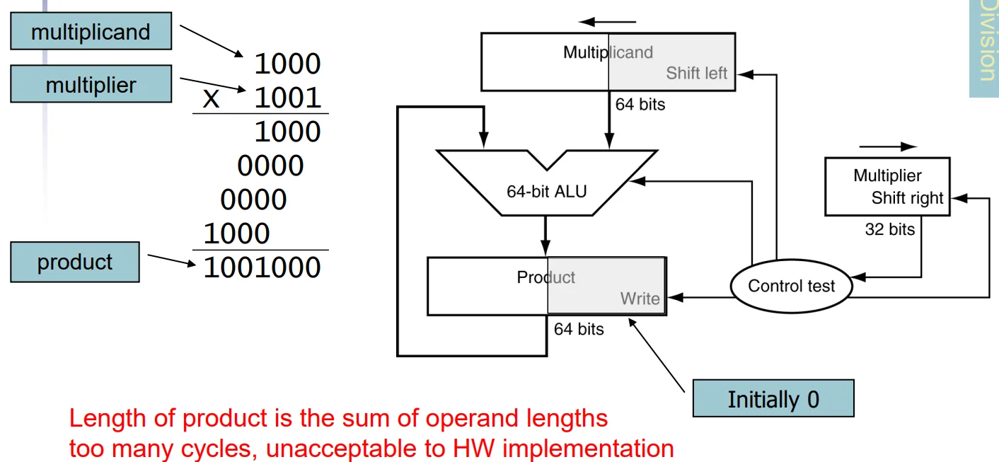
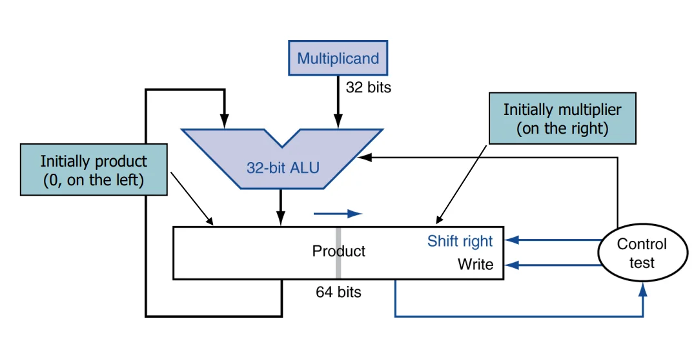
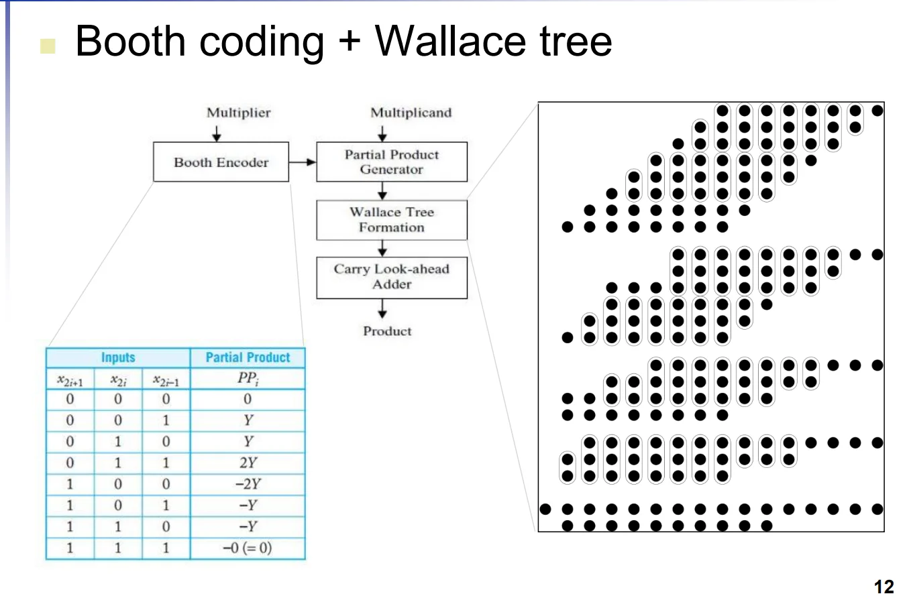
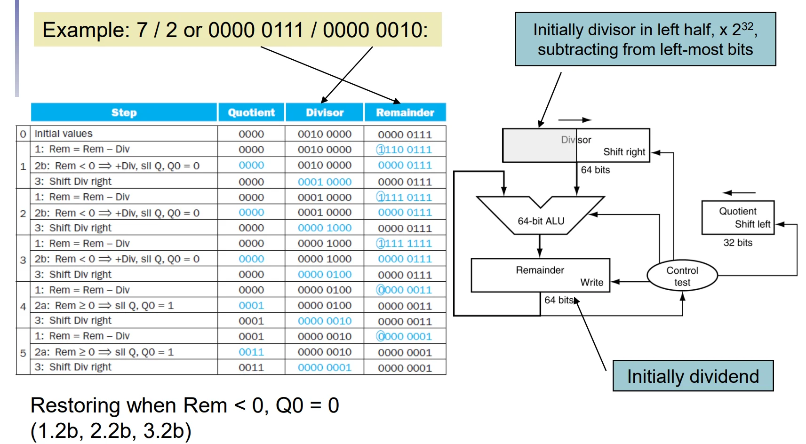
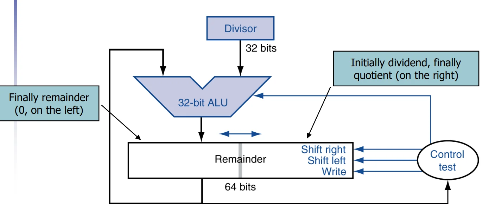
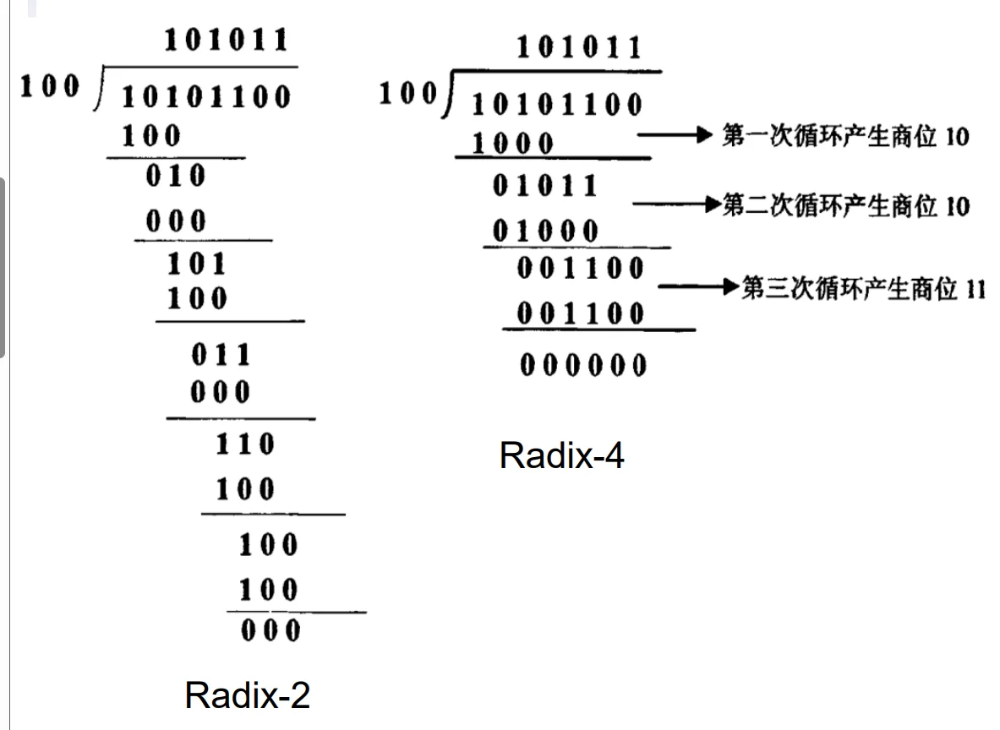

第三章：计算机中的算术
一、整数表示（Integer Representation）
在计算机系统中，整数主要有两种表示方式：无符号整数和有符号整数（补码）。
1.1 无符号整数 (Unsigned Binary Integers)
无符号整数直接将二进制位权相加，仅用于表示非负数。
(1) 表示公式：
对于一个 \(n\) 位二进制数：
(2) 数值范围：
从 \(0\) 到 \(+(2^n - 1)\)
(3) 32位系统示例：
范围：\(0\) 到 \(+4,294,967,295\)。
二进制转十进制：例如 0000...1011₂ 对应 \(1\times2^3 + 0\times2^2 + 1\times2^1 + 1\times2^0 = 8 + 0 + 2 + 1 = 11_{10}\)。
1.2 补码有符号整数 (2s-Complement Signed Integers)
补码是计算机中表示有符号（正、负、零）整数的标准方法，其核心特点是最高位（MSB）具有负权重。
(1) 表示公式：
对于一个 \(n\) 位数：
$\(x = \color{red}{-x_{n-1}2^{n-1}} + \color{black}{x_{n-2}2^{n-2}} + \dots + x_{1}2^1 + x_{0}2^0\)$
(2) 符号位 (Sign Bit)：
在32位整数中，第31位是符号位：
0：表示非负数（Non-negative numbers）。
1：表示负数（Negative numbers）。
(3) 数值范围：
从 \(-2^{n-1}\) 到 \(+(2^{n-1} - 1)\)。
(4) 32位系统示例：
范围：\(-2,147,483,648\) 到 \(+2,147,483,647\)。
计算示例：1111...1100₂ 对应 \(-1\times2^{31} + 1\times2^{30} + \dots + 1\times2^2 + 0\times2^1 + 0\times2^0 = -4_{10}\)。
补码的关键特性：
- 非负数一致性：非负数的补码表示与其无符号表示完全相同。
- 特定的重要数值（\(N\)位）：
- 0：
0000 0000 ... 0000 - -1：
1111 1111 ... 1111（所有位全为1） - 最大正数 (Most-positive)：
0111 1111 ... 1111(\(2^{N-1}-1\)) - 最小负数 (Most-negative)：
1000 0000 ... 0000(\(-2^{N-1}\)，其绝对值比最大正数大1)
- 0：
1.3 符号取反操作 (Signed Negation)
在补码系统中，将一个数变号（正数变负数或反之）的捷径是：求反加一。
(1) 操作步骤：
1. 取反 (Complement)：将所有位翻转（1变0，0变1）。
2. 加1：在最低位加1。
(2) 数学原理：
证明：
对于一个 \(n\) 位数：
\(x = \color{red}{-x_{n-1}2^{n-1}} \color{black}{+ x_{n-2}2^{n-2} + \dots + x_{1}2^1 + x_{0}2^0}\)
我们将其各位取反：
\(\bar{x} = \color{red}-{\bar{x}_{n-1}2^{n-1}} \color{black}{+ \bar{x}_{n-2}2^{n-2} + \dots + \bar{x}_{1}2^1 + \bar{x}_{0}2^0}\)
注意到：
\(x_{k} + \bar{x}_{k} = 1\)
因此我们有：
证毕。
(3) 示例：将 +2 变为 -2：
* \(+2\) = 0000...0010₂
* 第一步取反：1111...1101₂
* 第二步加1：1111...1101₂ + 1 = 1111...1110₂ （即 -2）。
进而引申：
!!! note 1. 计算中，减去一个正数，等于加上它的相反数的补码
!!! note 2. 计算机中，加法和减法都可以通过补码的加法实现
根据课件内容，我为你整理了关于整数加减法、溢出处理、乘法运算及其电路实现、RISC-V实现的学习笔记。作为微电子专业的学生，这部分重点关注硬件实现的演进（从串行到并行加速）以及硬件开销的优化。
二、整数加减法与溢出处理
2.1 整数加减法 (Integer Addition & Subtraction)
- 加法原则：从最低位开始逐位相加，并向高位进位（Carries）。
- 减法原则：通过加法器实现。减去一个数等于加上该数的补码（即取反加1）。
- 例如：\(7 - 6 = 7 + (-6)\)。
2. 溢出处理 (Dealing with Overflow)
当运算结果超出了当前位数所能表示的范围时，发生溢出。
* 加法溢出判定：
* 一正一负相加：永远不会溢出。
* 两个正数相加：结果符号位为1（变为负数），则溢出。
* 两个负数相加：结果符号位为0（变为正数），则溢出。
* 减法溢出判定：
* 两个同号数相减：永远不会溢出。
* 负数减正数：结果符号位为1，则溢出。
* 正数减负数：结果符号位为0，则溢出。
* 两种溢出处理方式
* Satruating(饱和)：当发生溢出时，结果被强制设置为可表示的最大值或最小值。常见于Graphics and media processing
* Clipping(截断)：当发生溢出时，结果被截断为可表示的范围内的值。即取模回绕（Wrap-around）。例如在8bit无符号加法中，\(255 + 1\) 会回绕到 \(0\)。
三、乘法运算及其电路实现
3.1 基础乘法算法 (Long-multiplication Approach)
类似于手工长乘法，通过逐位检查乘数（Multiplier）并对被乘数（Multiplicand）进行移位和累加。
* 硬件特点：乘积的长度是操作数长度之和（如两个32位数相乘得到64位积）。
* 初步硬件实现：包含64位ALU、64位被乘数寄存器（左移）、32位乘数寄存器（右移）及64位乘积寄存器。缺点：时钟周期多，硬件利用率低。

3.2 优化后的乘法器电路 (Optimized Multiplier)
为了减小面积和提升速度，微电子设计中常采用优化电路：
* 并行化设计：将加法和移位步骤并行执行。
* 寄存器优化：乘积寄存器的右半部分最初存放乘数，随着运算进行，乘数被移出，乘积的低位被移入，从而节省空间。

3.3 高性能“真实”乘法器 (Real Multiplier Structure)
现代芯片（如GPU/高性能CPU）中使用更复杂的电路结构：
* 布斯编码 (Booth Encoder)：通过对乘数进行编码，减少产生的部分积（Partial Products）数量。
* 华莱士树 (Wallace Tree)：采用树状结构的加法器阵列，实现部分积的并行压缩相加，大幅降低延迟。
* 先行进位加法器 (Carry Look-ahead Adder, CLA)：用于最后的求和阶段，以极快速度处理进位传递。

3.4 RISC-V 乘法指令实现
由于 RISC-V 的标准寄存器（在 32 位架构下）只能存储 32 位数据，因此指令集通过不同的指令来分别获取这 64 位结果的低 32 位和高 32 位。
(1) 获取乘积的低位 (Least-significant 32 bits)
* 指令：mul rd, rs1, rs2
* 功能：将 rs1 和 rs2 相乘，并将结果的低 32 位写入目标寄存器 rd。
* 特点：无论操作数是有符号数还是无符号数，乘积的低 32 位在二进制补码表示下都是相同的，因此不需要区分符号类型。
(2) 获取乘积的高位 (Most-significant 32 bits)
对于乘积的高 32 位，符号位的影响至关重要，因此 RISC-V 提供了三条不同的指令来处理符号扩展：
mulh rd, rs1, rs2：用于 有符号数 × 有符号数。它会将结果的高 32 位存入rd。mulhu rd, rs1, rs2：用于 无符号数 × 无符号数。它将结果的高 32 位作为无符号数处理并存入rd。mulhsu rd, rs1, rs2：用于 有符号数 × 无符号数。这种混合模式在处理多倍精度算术或特定算法时非常有用，它同样取结果的高 32 位。
四、整数除法（Division）运算及其电路实现
4.1 基础除法算法与恢复余数法 (Restoring Division)
除法的逻辑过程类似于手工长除法，但硬件实现更为具体：
* 基本原则：对于 \(n\) 位操作数，会产生一个 \(n\) 位的商（Quotient）和一个 \(n\) 位的余数（Remainder）。
* 算法步骤：
* 检查除数（Divisor）是否为0。
* 比较除数与被除数（Dividend）的当前位，如果除数 \(\le\) 当前位，则商置1并进行减法。
* 否则，商置0，并将被除数的下一位降下继续比较。
* 恢复余数法 (Restoring Division)：在硬件执行减法后，如果余数变为负数（< 0），则必须将除数加回到余数中以“恢复”原来的值。
4.2 除法器硬件电路实现 (Division Hardware)
课件对比了两种硬件结构，重点在于资源优化：
* 非优化结构：使用64位ALU、64位余数寄存器和64位除数寄存器（右移），商寄存器为32位（左移）。

* 优化后的除法器 (Optimized Divider)：
* 硬件高度复用：优化后的除法器结构与乘法器非常相似，通常可以使用同一套硬件来实现乘法和除法。
* 寄存器配置：32位ALU；64位余数寄存器初始化时右半部分放被除数，运算结束后左半部分存放余数，右半部分存放商。

4.3 除法加速技术 (Faster Division)
与乘法不同，除法很难使用类似华莱士树的并行硬件来加速。常用的加速手段包括：
(1) 不恢复余数法 (Non-restoring Division)：
我们就假设减掉除数后余数小于0的情况
| Method | reminder of cycle \(N\) | reminder of cycle \(N + 1\) |
| --- | --- | --- |
| Restoring | \(r - d(<0)\) restor to \(r\) | \(r \times 2 - d\) |
| Non-restoring | \(r - d(<0)\) | \(2(r-d) + d\) |
（上面的乘2，原因是在做下一轮减法时，需要将余数左移一位，这样被除数的下一位才能落在“个位”，可以联想一下手工除法以作理解）
Non Restoring 的意思就是：
即使减法结果为负，也直接存储该差值，不进行“加回”操作。
通过在下一周期进行特定的补偿调整，节省了恢复余数所需的时钟周期。
(2) SRT 除法 (SRT Division)：
每一步可以产生多个商位（例如 Radix-4 每步产生4位）。
实现原理：利用查找表（Lookup Table），根据余数的高几位和除数的高几位来“预测”需要减去的数值，从而减少总迭代步数。

1. SRT 算法中：查找表会存储 \(m\) 位的部分商，这些部分商是由部分余数的 \(m\) 位和除数的 \(m\) 位共同决定的。表格的存储空间大小为 \(2^{2m}\times m\) 位，这个大小会受到内存容量的限制。
2. 采用基数为 \(2b\) 的除法运算，可以将所需的计算周期数降至原来的 \(1/b\)，但每个周期的实现复杂度也相应增加了。
4. 有符号除法 (Signed Division)
有符号除法的核心原则是“余数的符号必须与被除数一致”：
1. 取被除数和除数的绝对值进行除法运算。
2. 调整符号规则：
* 如果操作数异号，则商为负。
* 余数的符号必须与被除数一致。
* 这意味着商总是向零舍入（Rounded toward zero）。
5. RISC-V 除法指令实现
RISC-V 将商和余数的获取拆分为不同的指令，且区分有符号与无符号：
- 获取商 (Quotient)：
div rd, rs1, rs2：有符号除法。divu rd, rs1, rs2：无符号除法。
- 获取余数 (Remainder)：
rem rd, rs1, rs2：有符号取模。remu rd, rs1, rs2：无符号取模。
这部分笔记将重点整理课件中关于浮点数（Floating Point）的表示、IEEE 754 标准以及编码细节。
五、浮点数表示与编码 (Floating-Point Representation)
浮点数用于表示非整数，包括极大或极小的数值，其形式类似于科学计数法。
5.1 二进制科学计数法 (Binary Scientific Notation)
在二进制中，浮点数表示为：\(\pm 1.xxxxxxx_2 \times 2^{yyyy}\)。
* 规格化 (Normalized)：基数点左侧只有一位非零数字（在二进制中恒为1）。
* 非规格化 (Not normalized)：如 \(+0.002 \times 10^{-4}\)。
5.2 IEEE 754 浮点数标准
这是目前计算机系统通用且几乎唯一采用的浮点数格式。它定义了两种主要表示形式：
* 单精度 (Single precision, float)：32位。
* 双精度 (Double precision, double)：64位。
编码结构图示：
| 精度 | 符号位 (S) | 指数位 (Exponent) | 尾数位 (Fraction) |
|---|---|---|---|
| 单精度 | 1 bit | 8 bits | 23 bits |
| 双精度 | 1 bit | 11 bits | 52 bits |
5.3 核心计算公式
浮点数 \(x\) 的数值计算如下：
$\(\mathbf{x = (-1)^S \times (1 + Fraction) \times 2^{(Exponent - Bias)}}\)$
关键编码原则：
- 符号位 (S)：0 表示非负，1 表示负数。
- 隐含位 (Hidden Bit)：为了节省空间，规格化后的尾数总是以“1.”开头，因此硬件编码时只存储点后的部分 (Fraction)，计算时自动恢复“1.”。
- 偏置指数 (Biased Exponent)：
- 指数部分采用偏置计数法，确保指数始终为无符号数，便于硬件比较大小。
- Bias 值：单精度为 127，双精度为 1023。
- 实际指数 = 寄存器值 (Exponent) - Bias。
Question
为什么需要bias？
在浮点数表示中，指数 \(E\) 本身既可能是正数，也可能是负数（例如 \(2^{-126}\) 或 \(2^{127}\)）。如果直接用补码表示，硬件进行比较和排序时会变得复杂。
通过引入偏置 \(B\)，我们将实际指数 \(e\) 映射为存储的指数 \(E\)：
这样我们能够确保 \(E\) 始终是一个非负整数。
为什么是127和1023？
以单精度为例，规格化数（normalized numbers） 可用的 \(E\) 的范围是 \([1, 254]\)。为了让正负指数的范围尽可能对称，我们需要寻找一个中间值 \(B\)，使得：当 \(E = 1\) 时，对应的实际指数 \(e_{min}\) 为负数。当 \(E = 254\) 时，对应的实际指数 \(e_{max}\) 为正数。且 \(e_{max} \approx |e_{min}|\)。
代入公式即可解得：\(B = 127\)
5.4 数值范围与精度
(1) 单精度范围
* 最小值：\(\color{blue}{1.00\cdots 0 \times 2^{1-127}} \color{black}{= \pm 1.0 \times 2^{-126} \approx \pm 1.2 \times 10^{-38}}\)。
* 最大值：\(\color{blue}{1.11\cdots 1 \times 2^{254-127}} \color{black}{\approx \pm 2.0 \times 2^{+127} \approx \pm 3.4 \times 10^{+38}}\)。
(2) 浮点数稠密度
浮点数不是均匀分布的。它是一个非均匀的线性分段结构。
单精度浮点数的形式为：\((-1)^S \times (1.M) \times 2^{E-127}\)
* 指数 (E) 决定了“量级”（区间）。
* 尾数 (M) 决定了该区间内的“划分密度”。
在一个给定的指数 \(E\) 下，尾数有 23 位，意味着该区间内有 \(2^{23}\) 个等间距的点。随着 \(E\) 的增大，区间的跨度变大，但点数始终为 \(2^{23}\)，因此相邻点的间距（即最小精度单位，称为 ULP，Unit in the Last Place）会随指数增大而按指数增长。
(3) 相对精度
- 单精度：约为 \(2^{-23} \approx 1.19 \times 10^{-7}\)，即大约 7 位十进制有效数字。
- 双精度：约为 \(2^{-52} \approx 2.22 \times 10^{-16}\)，即大约 16 位十进制有效数字。
(4) 浮点数相对间距
对于指数 \(E\)（规格化数），相邻两个浮点数之间的差值为：
$\(\text{ULP} = 2^{E-127} \times 2^{-23} = 2^{E-127-23} = 2^{E-150}\)$
-
例子 1：指数相同时
假设 \(E= e + 127\)（即实际指数为 \(e\)）。
此时 \(2^{e} \times 2^{-23} = 2^{e-23}\)。
在这个区间内，每个数之间都隔着 \(2^{e-23}\)。 -
例子 2：指数相差 1 时（跨过 \(2^n\) 分界点）
这是浮点数最容易让人误解的地方。当指数 \(E\) 增加 1 时，该区间的数值跨度翻倍，因此 ULP 也翻倍。- 在区间 \([2^0, 2^1)\)，即 \(E=127\) 时，ULP 为 \(2^{-23}\)。
- 在区间 \([2^1, 2^2)\)，即 \(E=128\) 时，ULP 为 \(2^{1-23} = 2^{-22}\)。
结论：数值越大，绝对误差越大，但相对精度（精度与数值的比值）保持不变。
5.5 非规格化浮点数
5.5.1. 数学定义：为什么偏偏是 \(2^{-126}\)？
前面我们提到，当指数位 \(E = 0\) 且尾数位 \(M \neq 0\) 时，该数为非规格化数。
它的计算公式是：
$\(V = (-1)^S \times (0.M) \times 2^{-126}\)$
你可能会问：既然 \(E=0\)，偏置是 \(127\)，按照公式 \(e = E - B = 0 - 127 = -127\)，为什么非规格化数的指数被硬性规定为了 \(-126\) 呢？
这是一个极度聪明的工程妥协，目的是为了与“最小的规格化数”实现无缝的平滑衔接。
我们来看看这中间的过渡：
* 最小的正规格化数（\(E=1, M=00...0\)）：
数值 \(= 1.0 \times 2^{1-127} = 1.0 \times 2^{-126}\)
* 最大的非规格化数（\(E=0, M=11...1\)）：
数值 \(= 0.111...1_2 \times 2^{-126}\) （注意这里使用的是 \(-126\)）
如果我们将非规格化数的指数设定为 \(-126\)，那么从最大的非规格化数加 1 个 ULP（也就是加 \(0.000...1_2 \times 2^{-126}\)），刚好就等于 \(1.0 \times 2^{-126}\)，完美过渡到了最小规格化数！
如果使用 \(-127\)，这两者之间就会出现断层。因此，IEEE 754 规定非规格化数的实际指数“冻结”在最小规格化数的指数上（即 \(-126\)），仅仅将隐含位从 1 变成了 0。
5.5.2 核心使命：拯救“突然下溢”与捍卫数学公理
在没有非规格化数的早期计算机中，浮点数运算存在一个致命缺陷。
灾难场景：Flush-to-Zero（粗暴归零）
如果没有非规格化数，单精度能表示的最小正数就是 \(N_{min} = 1.0 \times 2^{-126}\)。
如果进行减法 \(x - y\)，比如：
\(x = 1.0000001_2 \times 2^{-126}\)
\(y = 1.0000000_2 \times 2^{-126}\)
很明显 \(x \neq y\)。但是它们相减的结果是 \(0.0000001_2 \times 2^{-126}\)。
由于没有非规格化数（无法表示隐含位为 0 的数），计算机只能认定这个结果超出了表示范围（下溢），直接把它暴力截断为 0。
这违背了代数中最基本的一条公理：
\(x - y = 0 \iff x = y\)
在数值分析中，如果 \(x \neq y\) 但 \(x - y = 0\)，会导致诸如 if (x != y) z = 1 / (x - y) 这样的代码发生除零崩溃（Divide by Zero）。
救星：逐渐下溢（Gradual Underflow）
非规格化数填补了 \(0\) 到 \(N_{min}\) 之间的巨大鸿沟。
这 \(2^{23} - 1\) 个非规格化数，像极其细密的沙子一样填进了最靠近 0 的区间。
由于非规格化数的存在，只要 \(x\) 和 \(y\) 是浮点数，\(x - y\) 的结果即使再小，也必定能用非规格化数精确表示出来。这就彻底保卫了 \(x - y = 0 \iff x = y\) 这个定理。
关于非规格化浮点数，更详细的介绍可以参考非规格化浮点数介绍文档
5.5.3 \(\pm 0\)
非规格化浮点数中，当尾数全为0时，表示正零（\(+0\)）或负零（\(-0\)），取决于符号位。
5.6 Infinity and NaN
当指数全为1（\(E=255\)）时，IEEE 754 预留了两种特殊数值：
* 无穷大 (\(\pm \infty\))：当尾数全为0时，表示正无穷或负无穷（取决于符号位）。这通常用于表示溢出结果或除以零的情况。
* NaN (Not a Number)：当尾数非零时，表示非法数值（如 \(0.0/0.0\)）。NaN 具有特殊的传播规则：任何与 NaN 进行的算术运算结果仍然是 NaN。
5.6 特殊数值汇总 (Reserved Values)
| 指数 (Exponent) | 尾数 (Fraction) | 表达对象 (Object) |
|---|---|---|
| 0 | 0 | 0.0 (有 \(\pm 0.0\) 之分) |
| 0 | 非零 | 非规格化数 (Denormal)：用于表示极小值，允许精度阶梯式下降，此时\(e = -126(-1022)\) |
| 1 至 254 (2046) | 任意值 | 规格化浮点数 |
| 255 (2047) | 0 | 无穷大 (\(\pm \infty\))：用于处理溢出，无需检查即可继续运算 |
| 255 (2047) | 非零 | NaN (Not a Number)：表示非法结果（如 0.0/0.0） |